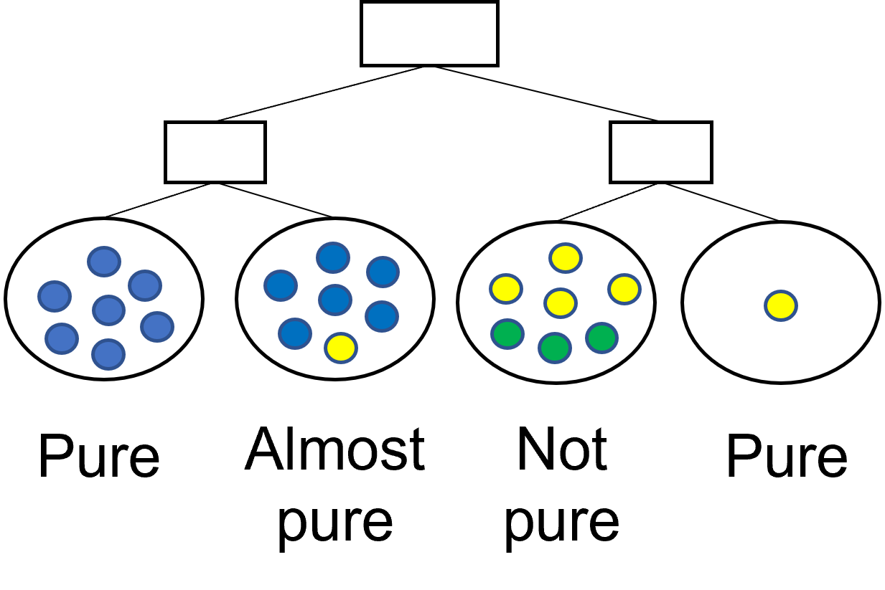

Data Platforms and Artificial Intelligence
Challenges and Applications
Polyglot Persistence
To each application, the appropriate DBMS

Polyglot Persistence
Data model heterogeneity

Polyglot Persistence
Advanced solutions
The challenge is to balance two often conflicting forces.
- Location Independence: A query is written, and the system figures out which storage engine it targets
- Semantic Completeness: A query can exploit the full set of features provided by a storage engine
Example of a polystore
- Island = a middleware application to support a set of operations on a given data model
- Shim = a wrapper to convert from the island’s query language to the target DB’s query language

BigDAWG (Mattson, Rogers, and Elmore 2019)
Advanced solutions
BigDAWG middleware consists of
- Optimizer: parses the input query and creates a set of viable query plan trees with possible engines for each subquery
- Monitor: uses performance data from prior queries to determine the query plan tree with the best engine for each subquery
- Executor: figures out how to best join the collections and then executes the query
- Migrator: moves data from engine to engine when the plan calls for such data motion

Middleware
… and of course we have metadata
Catalog: stores metadata about the system
- Databases: Databases, their engine membership, and connection authentication information.
- Objects: Data objects (i.e., tables), field names, and object-to-database membership.
Middleware
Schema profiling
The documents are the observations
The schema are the classes

Schema profiling
Schema profiling

Schema profiling
Schema profiling

Schema profiling
Explicativeness


Value-based (VB) conditions are preferred to schema-based (SB) ones
- SB: acknowledge a difference between schemas
- VB: explain it in terms of the values taken by an attribute
The fewer the SB conditions, the more explicativeness
Precision
A decision tree is precise if all the leaves are pure.
- A leaf \(v_j\) is pure if all its observations belong to the same class (i.e., \(entropy(v_j) = 0\))
- Entropy is strictly related to precision: divisive approaches typically stop only when the leaves are all pure


Conciseness
A maximally concise schema profile is one where there is a single rule for each schema
- Entropy: a leaf is pure if it contains only documents with the same class
- Schema entropy: a schema is pure if all its documents are in the same leaf


Schema profiling example

Examples
Schema profiling algorithm
Introduced the notion of schema entropy loss

Defined a criterion for comparing two splits in the decision tree

Integration techniques
Integration at the intensional level
- Schema matching and mapping (Rahm and Bernstein 2001)
- A match is a correspondence between attributes
- A mapping is a function to explain the relationship between attributes
- E.g.,
S1.FullName = CONCAT(S2.FirstName, S2.LastName)
- E.g.,
Integration at the extensional level
- Entity resolution (a.k.a. record linkage or duplicate detection)
- Identifying (or linking, or grouping) different records referring to the same real-world entity
- Aims at removing redundancy and increasing conciseness
- Data fusion (Mandreoli and Montangero 2019)
- Fuse records on the same real-world entity into a single record and resolve possible conflicts
- Aims at increasing correctness of data

OLAP querying
A first approach to OLAP on heterogeneous data


“One does not simply define a global schema”
New integration techniques

New OLAP querying


Previous issues
- Expensive querying
- Schema heterogeneity solved at query time
- Requires complex - but feasible - algorithms
- Expensive integration
- Pay-as-you-go approach is quicker, iterative, and more flexible
- Dataspace is conceptual, untied to logical data modeling
Now we have a multistore dealing with multiple data models and schema heterogeneity

Data fusion
Merge operator
- Originally introduced as “full outer join merge” (Naumann, Freytag, and Leser 2004)
- Aims to keep as much information as possible when joining the records of two schemas
- Avoid any loss of records
- Resolve mappings by providing transcoded output
- Resolving conflicts whenever necessary


Merge operator

Merge operator
On-the-fly data fusion
Merge operator in a query plan
- Take the data from heterogeneous sources (in different colors)
- Extract records of the single entities (e.g., customer, products)
- Merge each entity
- Join and produce the final result
Now we have a multistore dealing with multiple data models, schema heterogeneity, and data inconsistency
- Are we done? Not yet!

On-the-fly data fusion
Main issue: performance
- Collections accessed more than once
- Most effort pulled to the middleware
What can we do about it?
- Exploit more the local DBMSs
- Exploit local data modelling
- Carry out multi-entity merges
Issues
- Several query plans could be devised
- Hard to find the most efficient one
Same query, several query plans
What is the most efficient solution?
- Single-entity merge and subsequent joins
- Nest relational data and multi-merge with documents
- Join relational data and multi-merge with flattened documents
Depends on several factors
- On the capabilities of each DBMS/middleware
- On the presence of indexes and statistics
- On the resources available to each DBMS/middleware
- On the number of records involved on each side
… which can change over time

Cost modelling
Nested relational algebra

Nested data
Cost modelling
White-box cost modelling example (Forresi, Francia, et al. 2021)


Cost modelling
Black-box cost modelling example (Forresi et al. 2023)

Regression tree